All examples
Every example of the tutorials, 132 in all. Open this view opens the visualizer in exactly the state of the screenshot (it replaces the view you had; Copy link in the visualizer keeps your own). Read the example goes to its explanation. Filter by level:

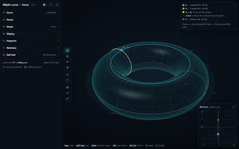
The seven sections of the panel

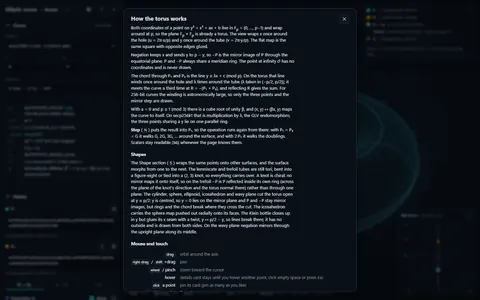
The help dialog: every key

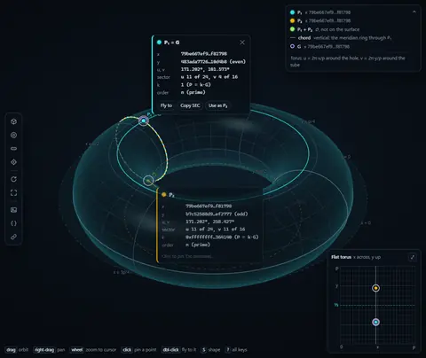
Hover and pin: the cards

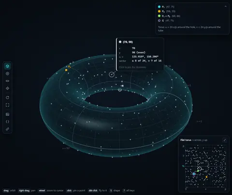
Every point of y² = x³ + 7 over F₂₂₃

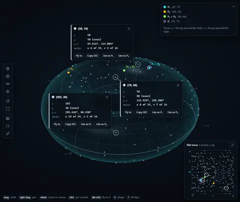
Pin as many as you like

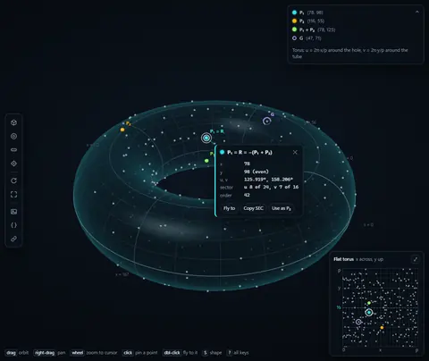
Use as P₁: a dot’s order

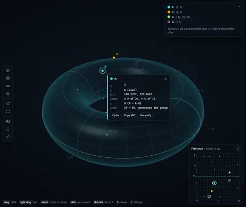
A tiny curve: 18 dots and 𝒪

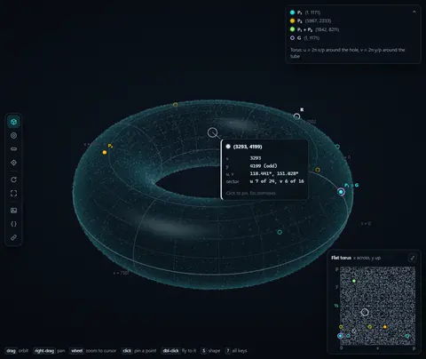
A big cloud: 10 191 dots

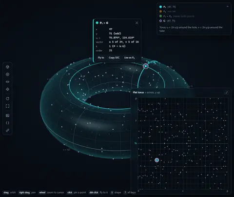
The flat map is the donut cut open

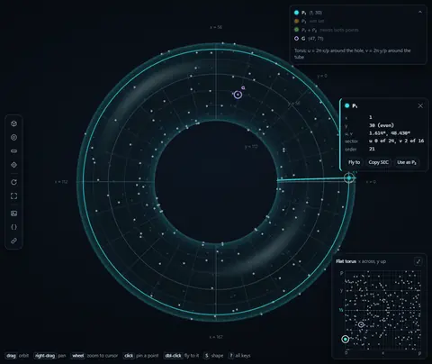
From the top: x goes around the hole

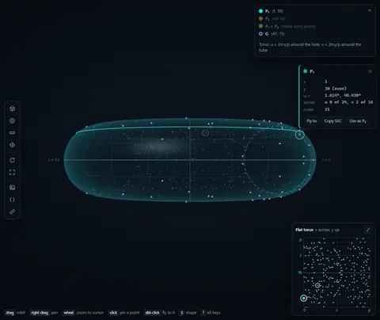
From the side: y goes around the tube

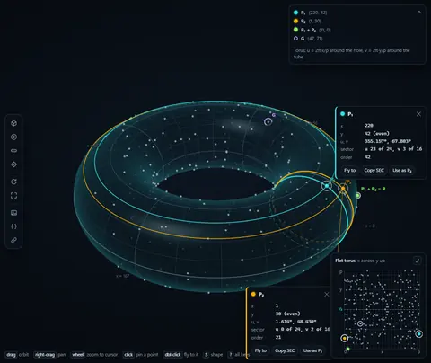
Neighbours across the x seam

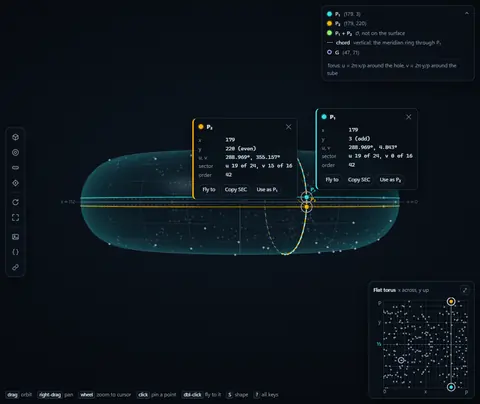
Neighbours across the y seam

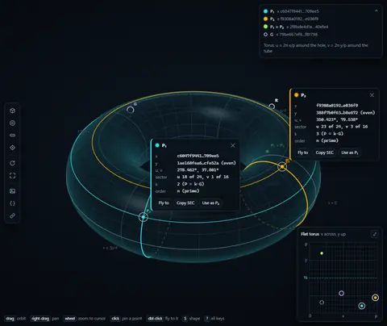
Private keys 2 and 3 on secp256k1

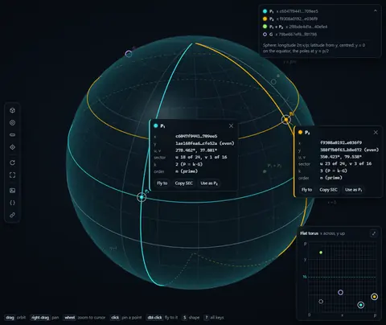
The same two keys on the sphere

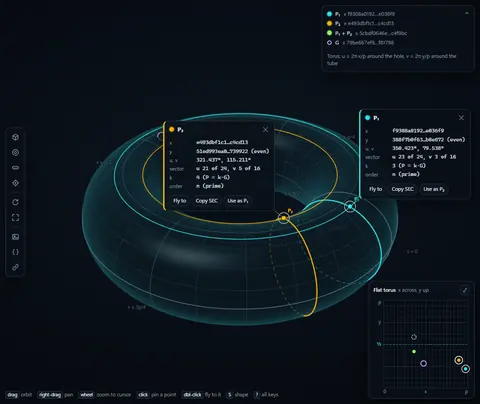
Neighbouring keys land far apart

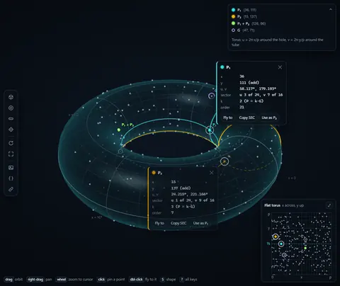
Keys 2 and 3 on a small curve

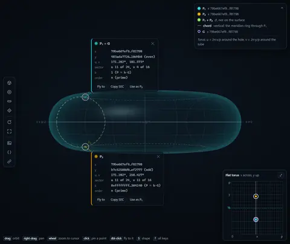
The prefixes 02 and 03: G and its mirror image

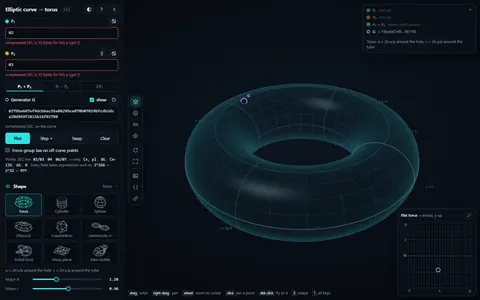
Literally 02 and 03 on secp256k1

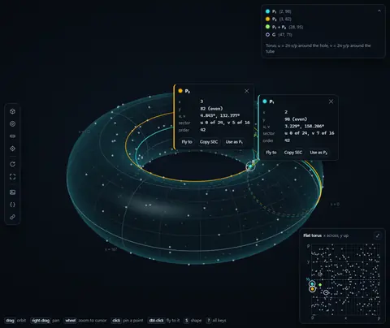
Literally 02 and 03 on F₂₂₃

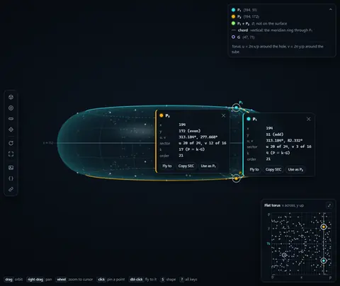
The mirror button: P₂ = −P₁

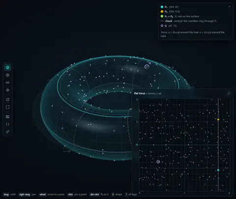
On the flat map: a flip about the middle line

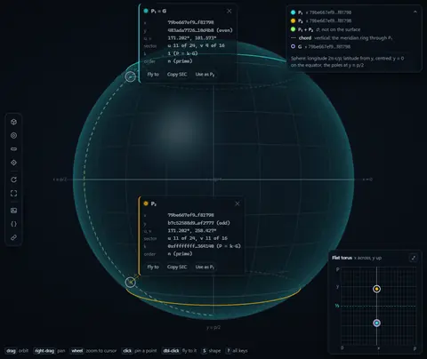
On the sphere: north and south

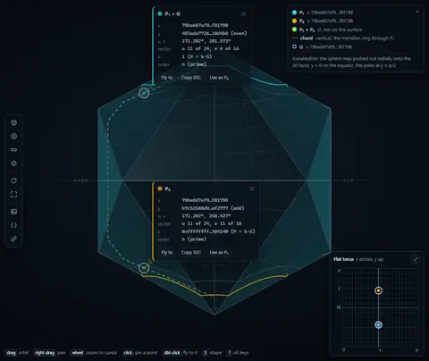
On the icosahedron

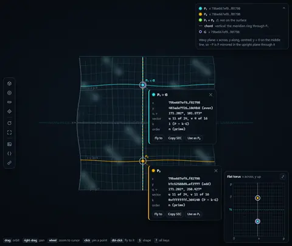
On the wavy plane: an upright mirror

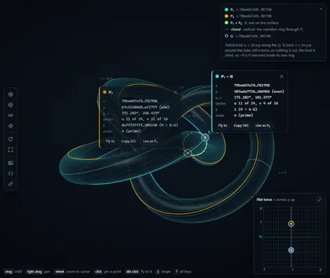
On the trefoil knot: a mirror inside the ring


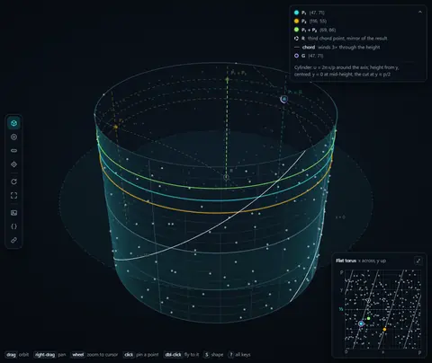
Cylinder

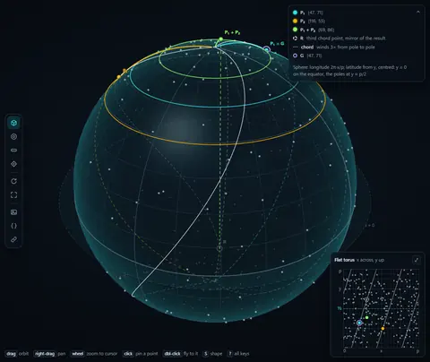

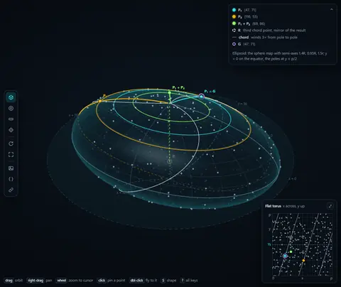
Ellipsoid

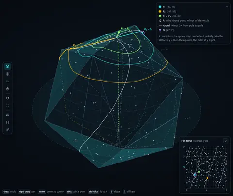
Icosahedron

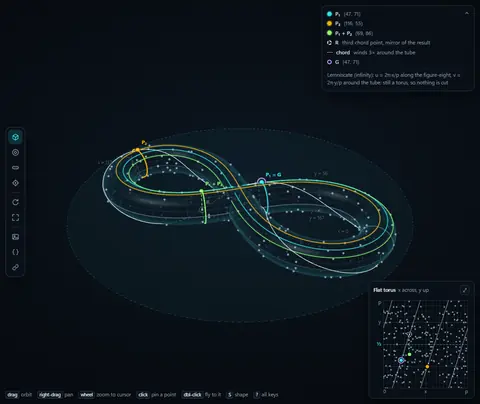
Lemniscate (infinity)

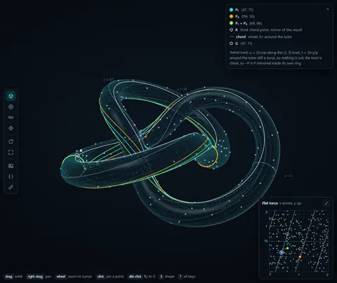
Trefoil knot

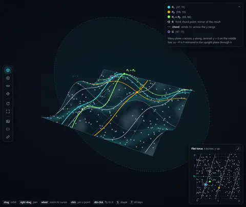
Wavy plane

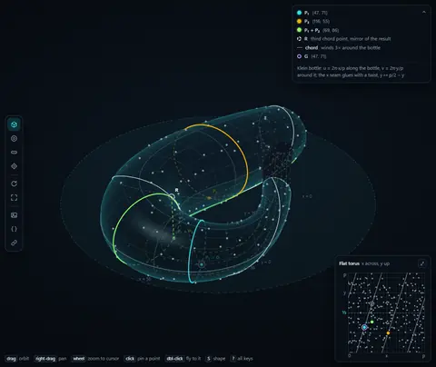
Klein bottle

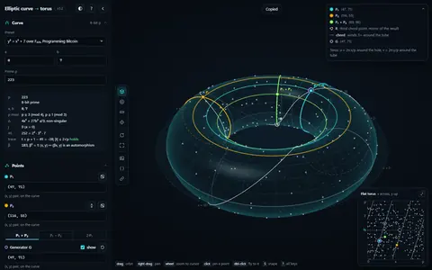
Copy link

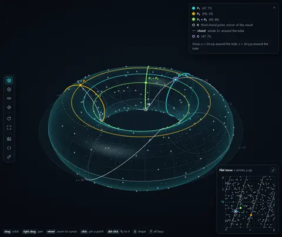
Save the view as PNG

Export the state and every point as JSON

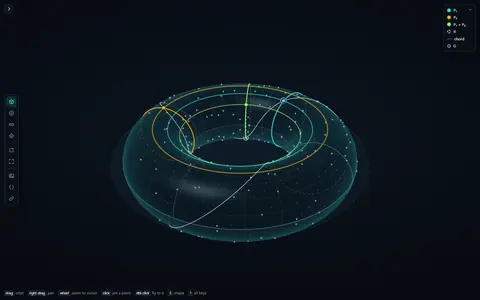
A clean picture: panel hidden, legend compact

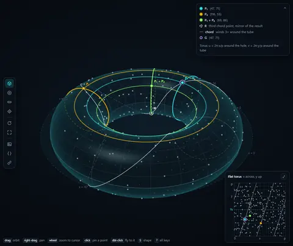
Hairlines: ?lines=thin

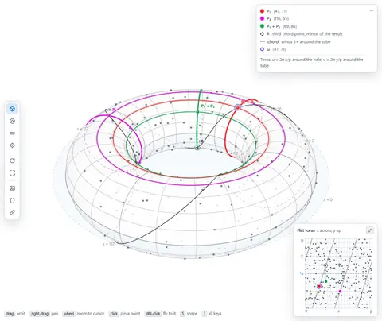
The paper theme

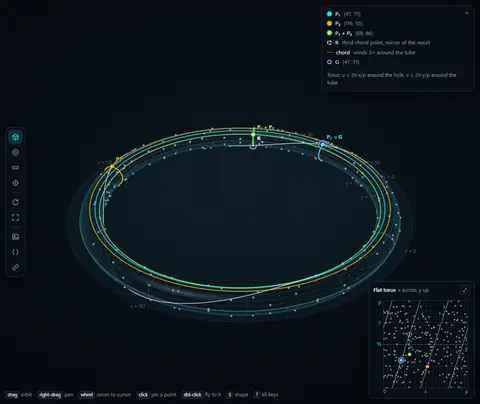
A slim tube: Major R 2.00, Minor r 0.15

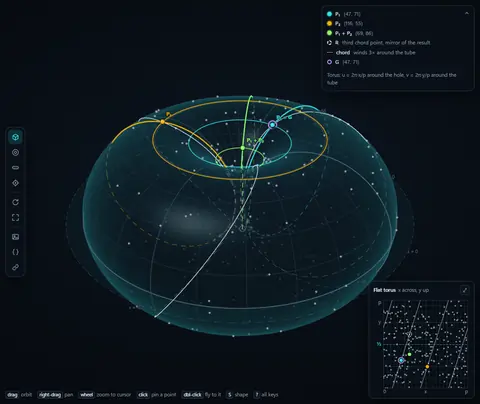
A fat tube: Major R 0.80, Minor r 0.75

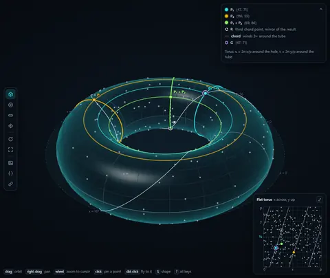
Glass 1.00, hidden lines 0.00

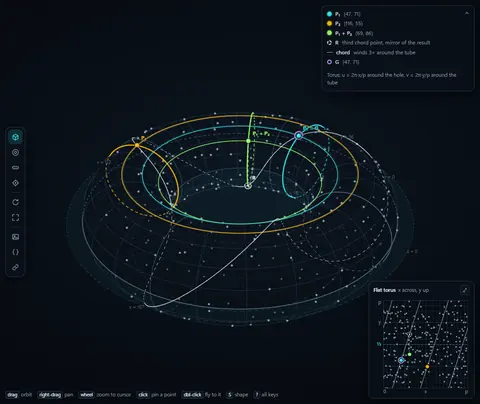
Glass 0.00, hidden lines 1.00

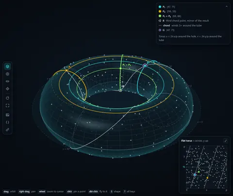
A finer grid: 48 × 32 sectors

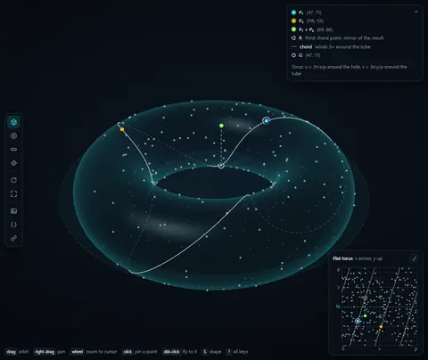
Only the points: grid, rings and labels off

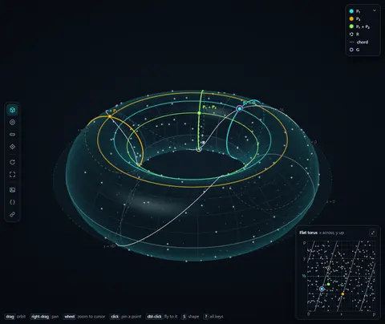
The compact legend

G = (47, 71) is on y² = x³ + 7 over F₂₂₃

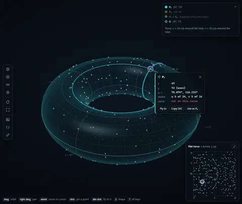
A point that is not on the curve

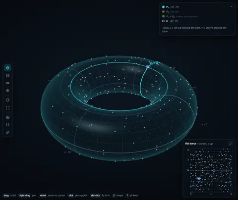
Coordinates are read mod p

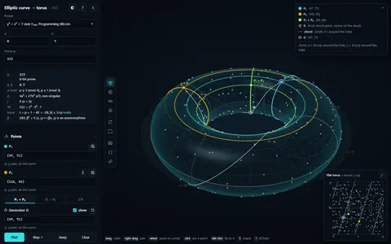
#E and the trace in Curve facts

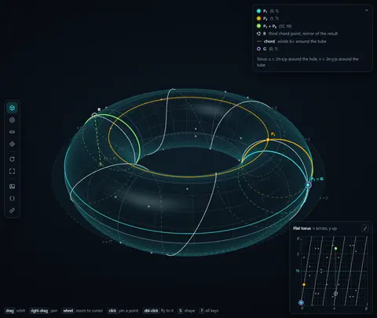